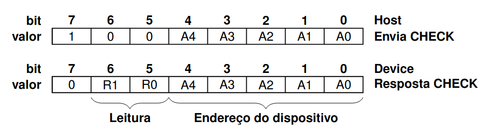
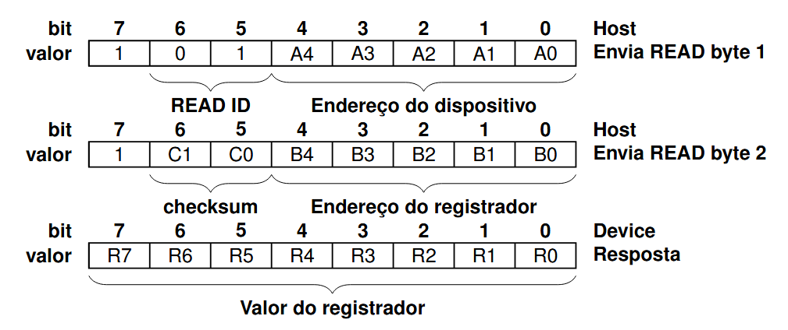
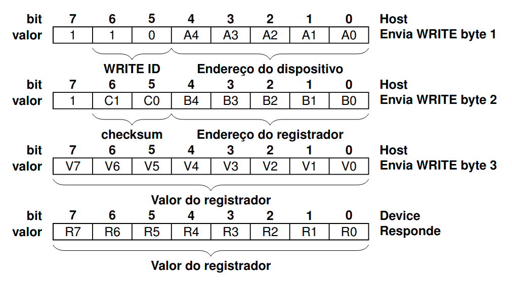

Comunicação
Os dispositivos da Fox Dynamics em sua maioria têm suporte ao protocolo FoxWire e comandos de texto (Shell). Esses meios de comunicação permitem: leitura, controle e configuração dos dispositivos.
FoxWire
O protocolo FoxWire foi projetado prover comunicação rápida e confiavel com multiplos dispositivos através de um unico fio. Ele pode ser implementado em Hardware ou em Software em praticamente qualquer microcontrolador.
Ele usa o protocolo UART 8N1 com baudrate de 115200, enquanto um dispositivo envia bytes os outros escutam. O protocolo funciona com o Host (Mestre) iniciando a comunicação, ele envia um pacote de um ou mais bytes que identifica o dispositivo e o modo de conexão.
Exitem 4 tipos de pacotes de inicialização, que indicam a quantidade de bits sequintes e o objetivo da comunicação.
- Pacote Status: Pacote de apenas 1 byte, que aguarda que o dispositivo destino responda com 1 byte de confirmação
- Pacote Read: Pacote de 2 bytes, que aguarda que o dispositivo destino responda com 1 byte de resposta
- Pacote Write: Pacote de 3 bytes, que aguarda que o dispositivo destino responda com 1 byte de resposta
- Pacote Extendido: Pacote com mais de 3 bytes
Header dos Pacotes
o header possui 1 byte
- bit 7 MSB: 1 (indica que é um pacote Header)
- bit 5-6: tipo de pacote (0, 1, 2 ou 3)
- bit 0-4: Endereço do dispositivo destino
Pacote status

Pacote read

Pacote write

Pacote extendido